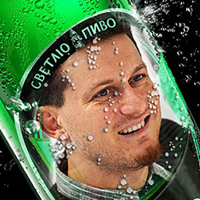

Светлин Наков от София пуска собствена марка бира!
Светлин Наков избра новата марка на неговата бира да се казва "Светльо пиво".
Той е толкова разочарован от българските и чуждестранните марки бири, че е решил да създаде ново поколение бира. От достоверни източници разбрахме, че Светлин Наков е събрал всичките си приятели и ги е завел в помещението което обитава в София. Там той и неговите приятели са измислили името на марката, което се казва "Светльо пиво".
Бирата е с 15% алкохол и е много силна, само за истински мъже! Въпреки, че бирата е с огромно съдържание на алкохол Светлин Наков успява да изпие по 14 литра на ден без проблем. Към момента от други източници разбрахме, че Светлин Наков има 18 предложения от най-големите пивоварни по света да изкупят рецептата на Светлин Наков и да пуснат неговата бира в масово произвдоство. Името на марката отново ще се казва "Светльо пиво".
Внимавайте! Бирата на Светлин Наков от София е силно алкохолна и не е за слаби момчета, а само за силни мъжаги! (И мъжки момичета разбира се)!